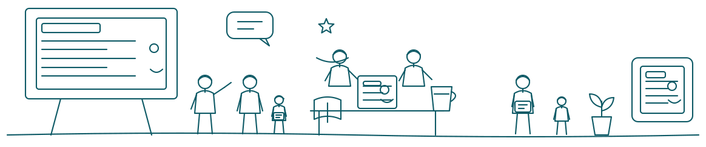
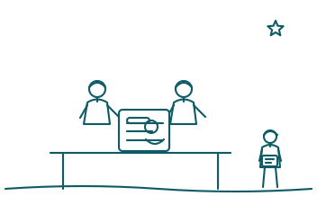

Vẽ tay. Mê sketchnote.
Mình là Trâm — 6 năm dạy sketchnote cho học viên từ trẻ em đến người lớn. Xem dịch vụ, đặt lớp học, hoặc nhờ mình vẽ riêng cho bạn một thứ gì đó.
★★★★★
6 năm đứng lớp · 5 dịch vụ · 2 khoá học Udemy

Vẽ xấu cũng không sao
Sáu năm qua, gần như học viên nào cũng mở đầu bằng câu đó. Rồi ai cũng vẽ được — vì sketchnote không cần đẹp, chỉ cần rõ.
Mình có thể giúp gì cho bạn?
Năm hình thức làm việc — cho người học một mình, một lớp nhỏ, một team công ty, một ban tổ chức sự kiện, hoặc khi bạn cần đặt vẽ riêng.
Một vài sự kiện
Những trang mình đã vẽ
Nơi mình lưu lại các trang sketchnote và những thứ truyền cảm hứng. Board được cập nhật liên tục.
Đang tải thư viện từ Pinterest…
Học viên nói gì
Những dòng này là lý do mình vẫn dạy sau 6 năm.
Học theo nhịp của riêng bạn
Hai khoá quay sẵn trên Udemy, mua một lần học lại bao nhiêu lần cũng được.

Từ giáo dục, qua thiết kế, rồi gặp sketchnote
-
Chặng 1
Bắt đầu từ ngành giáo dục
Mình học sư phạm, và những năm đó dạy mình một điều thành nền tảng cho mọi thứ sau này: hiểu một ý tưởng và giải thích được ý tưởng đó cho người khác là hai chuyện hoàn toàn khác nhau.
-
Chặng 2
Rẽ sang thiết kế
Mình chuyển qua UX-UI design và nhận ra đây vẫn là công việc cũ với một cái tên mới: sắp xếp thông tin sao cho người dùng hiểu ngay mà không phải cố gắng.
-
Chặng 3
Rồi gặp sketchnote
Sketchnote là chỗ hai chặng kia gặp nhau — vừa là dạy học, vừa là thiết kế, nhưng làm được bằng một cây bút và một tờ giấy. Mình vẽ để hiểu sách, vẽ để nhớ cuộc họp, rồi có người hỏi “dạy mình với”. Sáu năm trôi qua từ câu hỏi đó.
-
Bây giờ
Học viên từ lớp 3 đến quản lý cấp cao
Và thú vị là cả hai nhóm đều bắt đầu bằng đúng một câu: “nhưng mình vẽ xấu lắm”.